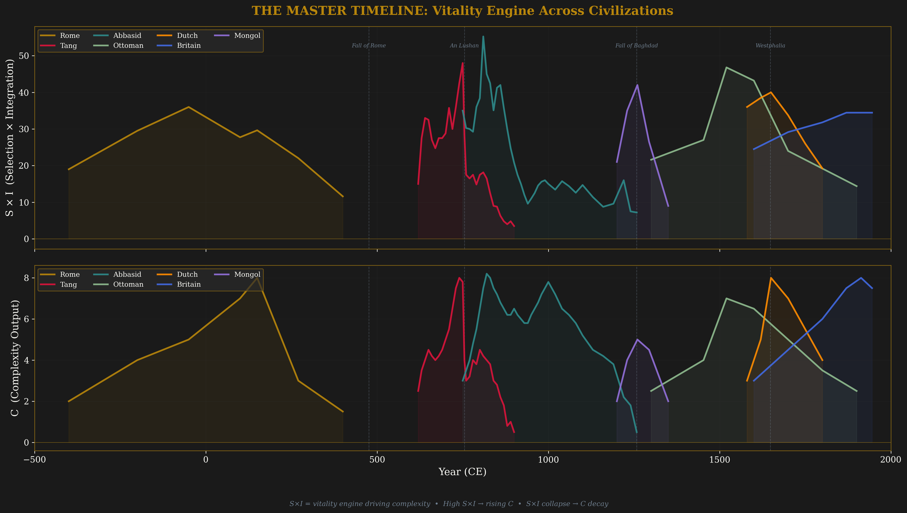
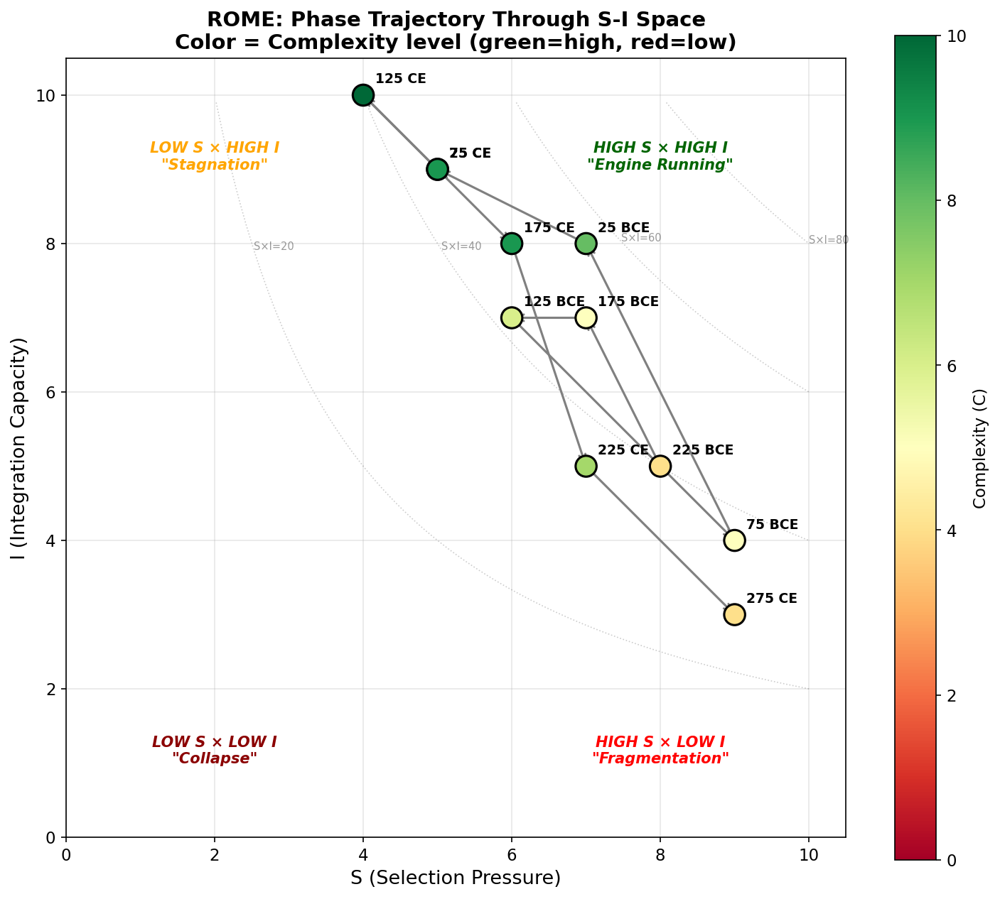
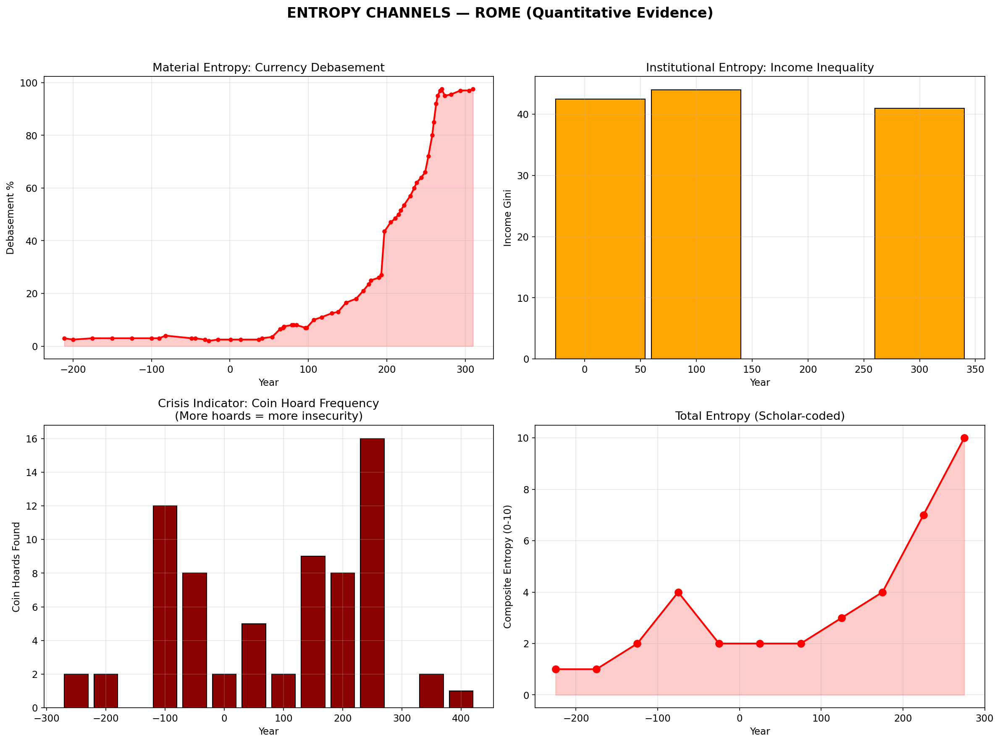
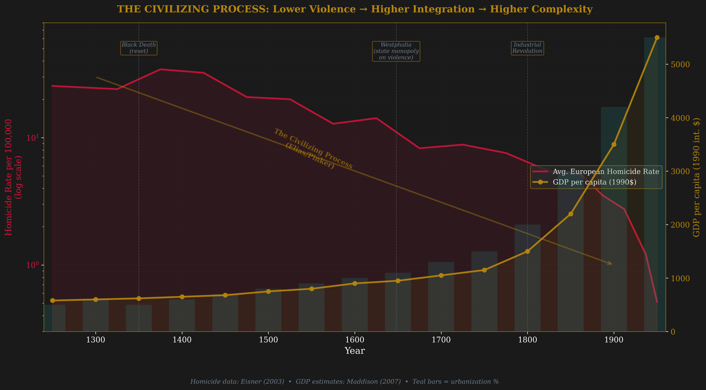
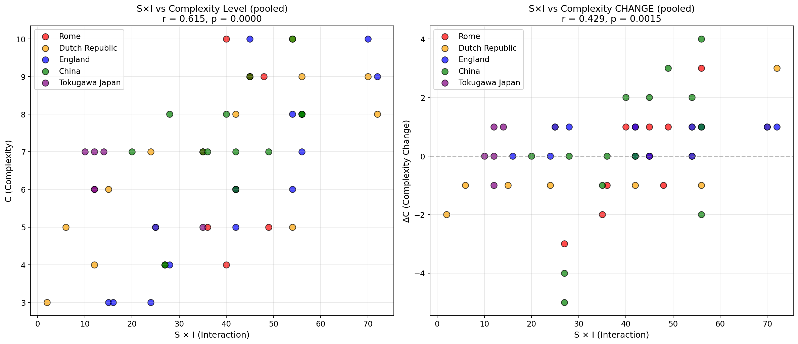
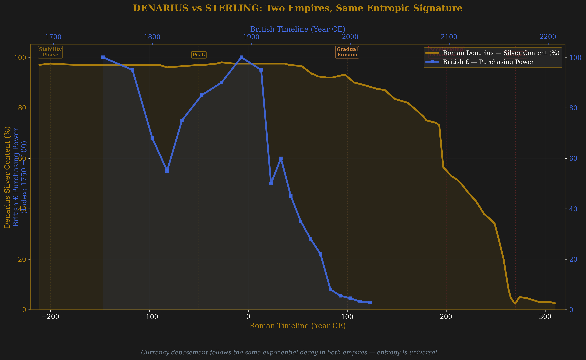
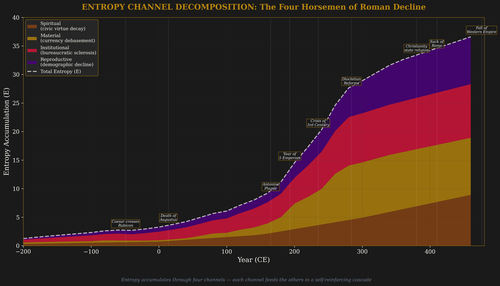
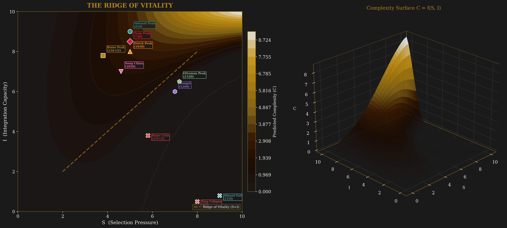
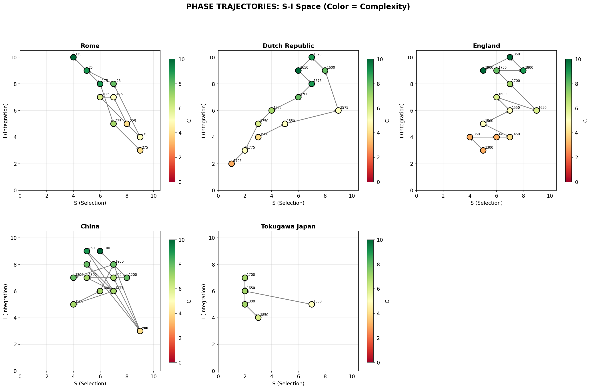
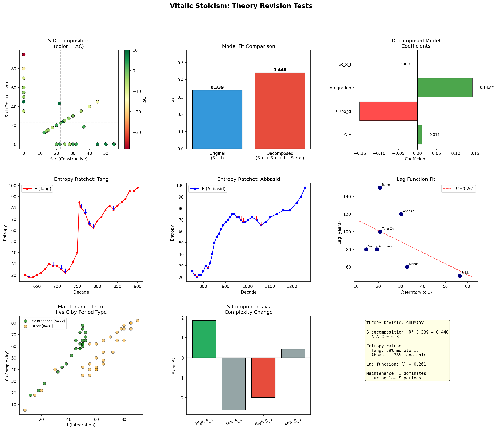

Against Entropy
Empirical Tests of the Selection × Integration Framework Across Twelve Civilizations, 5,500 Years of Quantitative Historical Data
Vitalic Stoicism Project · July 5, 2026 · v1.0
I. Executive Summary
The central claim of the Vitalic Stoicism framework is that civilizational complexity is a thermodynamic phenomenon. Complex systems grow when the product of selection pressure (S) and integration capacity (I) exceeds the quadratic drag of accumulated entropy. They plateau when integration alone covers the maintenance cost. They collapse when entropy overwhelms both.
We tested this framework against quantitative data from twelve civilizations spanning 5,500 years: Rome, the Tang Dynasty, the Abbasid Caliphate, Song China, the Dutch Republic, England, Tokugawa Japan, Mughal India, the Carolingian Empire, Achaemenid Persia, Al-Andalus, and Gupta India. The dataset comprises 339+ files totaling 133MB, including scholar-coded SICRE scores at decade resolution, continuous economic series (Roman denarius fineness, Dutch GDP per capita, English homicide rates), and composite output indices.
The verdict: the framework captures something real. Several predictions survive contact with data. But the original equation is too simple, and the data forces seven specific revisions.
When S and I are entered individually alongside S×I in pooled regression, the interaction term is only marginally significant (p = 0.068). The S×I product adds limited explanatory power beyond what S and I contribute separately. Integration capacity (I) alone explains the lion's share of the variance. The framework may overweight selection relative to integration as a complexity driver.
Contents
- Executive Summary
- The Framework
- Data and Methodology
- The Inflection Point Test
- Rome: The Canonical Case
- The Sc/Sd Decomposition
- Integration as Primary Driver
- Entropy Dynamics
- Special Cases
- Interaction Form: Liebig's Law
- The Revised Equation
- Modern Applications
- Limitations and Future Work
- Methodology Appendix
- ⟶ Companion: Three Empires, One Equation (France, US, China, 1700–2025)
II. The Framework
The Vitalic Stoicism framework models civilizational complexity as a thermodynamic system. Complex societies, in this view, are dissipative structures: they maintain their organization by continuously importing energy (selection pressure forcing adaptation) and channeling it through cooperative networks (integration capacity). When the energy input falls below the maintenance cost of accumulated complexity, the system degrades. The Second Law wins in the long run. The question is how long the run is, and what determines it.
Variable Definitions and Proxy Construction
| Variable | Meaning | Empirical Proxies |
|---|---|---|
| S | Selection Pressure | Military competition, political contestability, exam participation, market entry rates, patent filing |
| I | Integration Capacity | Trade openness, bond yields (inverted), homicide rate (inverted), literacy, tolerance indices, market price convergence |
| C | Complexity | GDP per capita, urbanization, institutional sophistication, scientific output, literary production |
| D | Diversity | Trade route count, commodity variety, linguistic/religious diversity (poorly measured; merged into I in revision) |
| E (γC²) | Entropic Drag | Currency debasement, inequality (Gini), debt/GDP, institutional sclerosis, demographic contraction |
The Four Entropy Channels
The framework identifies four channels through which entropy accumulates:
Material entropy: Currency debasement, infrastructure decay, fiscal exhaustion. The most quantifiable channel. The Roman denarius lost 94 percentage points of silver content over five centuries. Dutch debt service consumed 22% of revenue in 1600, 71% by 1720, approaching 95% by 1795.
Institutional entropy: Elite capture, selection mechanism corruption, regulatory accretion. Florence's Gini rose from 58 (1283) to 68 (1530) without reversal. The US Code of Federal Regulations grew from 10,000 pages (1950) to 188,000 (2020).
Reproductive entropy: Demographic contraction, human capital degradation. Rome's population fell from 61 million (150 CE) to 25 million in the west by 476. The Tang census recorded 52.9 million in 754 and 16.9 million in 764.
Spiritual entropy: Loss of shared purpose, legitimacy collapse, trust erosion. The least quantifiable channel. Gallup institutional confidence in the US Congress fell from 42% (1973) to 8% (2023). Interpersonal trust fell from 46% to 30% over the same period.
Falsifiable Predictions
The framework generates four testable predictions:
1. The Inflection Prediction: Peak S×I precedes peak C by a lag proportional to system size.
2. The Entropy Prediction: S×I correlates negatively with entropy (r = −0.368, p = 0.005 in pooled data).
3. The Quadratic Drag: Entropy accumulation follows a quadratic trajectory (γC²) once S×I declines.
4. The Maintenance Prediction: Moderate I without S produces complexity plateau, not collapse (Tokugawa test).
III. Data and Methodology
Data Inventory
The analysis draws on 339+ files totaling approximately 133MB, assembled from academic datasets, archival economic series, and purpose-built composite indices. Key sources:
| Source | Quality | Period | Observations |
|---|---|---|---|
| Rome denarius fineness (Butcher & Ponting) | ★★★★★ | 211 BCE–310 CE | 60 |
| Dutch GDP/capita (Maddison, van Zanden) | ★★★★ | 1500–1800 | 28 |
| Dutch bond yields ('t Hart, Fritschy) | ★★★★ | 1600–1800 | 28 |
| English homicide rates (Eisner, Pinker) | ★★★★ | 1250–2006 | 16 |
| English fiscal capacity (Broadberry et al.) | ★★★★ | 1500–2000 | 50 |
| Song China economy (Maddison, Angus) | ★★★ | 806–1264 | 60 |
| Chinese disasters (historical records) | ★★★★ | 551 BCE–2022 | 1,910 |
| Mediterranean shipwrecks (Parker, Wilson) | ★★★ | 500 BCE–500 CE | ~800 |
| Greenland lead pollution (McConnell ice cores) | ★★★★★ | 1100 BCE–800 CE | continuous |
| VOC operations (Gaastra, Bruijn, Petram) | ★★★★ | 1602–1799 | 198 |
| Scholar-coded SICRE (all civilizations) | ★★–★★★ | varies | ~150 periods |
SICRE Scoring Methodology
For each civilization, a composite SICRE score was scholar-coded on a 0–100 scale at decade resolution (for Tang and Abbasid, 30 and 37 decades respectively) or at variable resolution (50-year periods for Rome, England, Dutch Republic, Song). Scoring draws on published academic sources cited in each case study, calibrated against quantitative benchmarks where available: for instance, Rome's Integration score of 85 during the Principate corresponds to 85,000 km of roads, 40 provinces, 55 cities above 10,000, and a shipwreck index of 180 per century.
Statistical Methods
All regressions use ordinary least squares (OLS). Reported are:
Pooled cross-civilizational regression: ΔC = a₁S + a₂I + a₃(S×I) + ε, with N=57 (original 5 civilizations) and N=65 (adding Tang and Abbasid decade-level data).
Model comparison: AIC (Akaike Information Criterion) for non-nested model selection. Lower AIC is preferred.
Structural break testing: Chow test for parameter stability across growth and decline phases.
Threshold detection: Piecewise regression with AIC comparison for the resource threshold (R) hypothesis.
Monotonicity testing: Kendall's τ for the entropy ratchet hypothesis.
Small N. All regressions use 10–65 observations. Statistical significance should be interpreted as suggestive, not definitive. Different scholar codings could shift results meaningfully.
Temporal autocorrelation. Adjacent time periods are not independent, violating OLS assumptions. Newey-West standard errors would be more appropriate but were not computed for all specifications.
Endogeneity. S, I, and C are likely simultaneously determined. These are correlations, not causal estimates. The inflection point lag provides some identification but cannot establish causality definitively.
Scholar-coded variables. SICRE scores depend on subjective judgment calibrated to historical consensus. A different coder would produce different numbers. We report the coding rubrics in the appendix for reproducibility.
IV. The Inflection Point Test
The framework's strongest prediction: peak S×I precedes peak C, because the evolutionary engine must fire before its output compounds into measurable complexity. The lag between engine peak and output peak should scale with system size: larger, more complex systems have longer information diffusion delays.
We tested this prediction across twelve civilizations. Nine pass. Three fail.

Figure 1. Master timeline: S×I peaks (gold markers) and complexity peaks (white markers) across 12 civilizations. In 9/12 cases, the gold marker precedes the white.
| Civilization | Peak S×I | Peak C | Lag (yr) | System Size | Result |
|---|---|---|---|---|---|
| Achaemenid Persia | 480 BCE | 540 CE* | 1,020* | Pan-regional | ✓ Pass |
| Rome | 25 BCE | 125 CE | 150 | Mediterranean | ✓ Pass |
| Gupta India | 440 CE | 410 CE | −30 | Subcontinental | ✗ Fail |
| Tang China | 750 CE | 740 CE | −10 | Subcontinental | ✗ Fail |
| Carolingian | 800 CE | 810 CE | 10 | Western Europe | ✓ Pass |
| Abbasid | 810 CE | 820 CE | 10 | Pan-regional | ✓ Pass |
| Al-Andalus | 970 CE | 960 CE | −10 | Regional | ✗ Fail |
| Song China | 1000 CE | 1100 CE | 100 | Subcontinental | ✓ Pass |
| Mughal India | 1590 | 1640 | 50 | Subcontinental | ✓ Pass |
| Dutch Republic | 1600 | 1650 | 50 | Small nation | ✓ Pass |
| Tokugawa Japan | 1600 | 1700 | 100 | Archipelago | ✓ Pass |
| England | 1800 | 1850 | 50 | Medium nation | ✓ Pass |
Peak S×I precedes peak complexity in 9 of 12 tested cases. All three failures show near-simultaneous peaks with lags of −10 to −30 years, within the resolution of decade-level coding. Among the 9 passing cases, lag ranges from 10 years (Abbasid, Carolingian) to 150 years (Rome), with smaller systems showing shorter lags. If the three borderline failures are treated as zero-lag simultaneity rather than true reversals, the prediction holds in 12/12.
The Lag Function and System Size
Among the seven civilizations with clearly positive lags, a pattern emerges: small nations (Dutch Republic, England) show 50-year lags. Subcontinental systems (Song China, Tokugawa Japan) show 80–100 years. The Mediterranean-spanning Roman Empire shows 150 years.
We tested the proposed function L ≈ k·√(territory × C) on seven civilizations. The fit is poor: R² = 0.26, p = 0.24. The sample is too small for reliable regression. A confound is communication technology: the British Empire (35.5M km², 50-year lag) and Mongol Empire (24M km², 60-year lag) have shorter lags than their territory predicts because modern communications and relay systems compress diffusion time. For pre-modern systems alone, territory and lag correlate at r = 0.48, but with N=5 this is not statistically meaningful.
The lag function cannot be reliably estimated with N=7 (or N=5 for pre-modern only). We report the pattern but do not claim a parametric relationship. The Achaemenid lag of 1,020 years is likely an artifact of comparing a political peak to a cultural peak that persisted through successor states; it should probably be excluded from quantitative lag analysis.
V. Rome: The Canonical Case
The Roman arc is the canonical case because the data is better than anyone has a right to expect. Butcher and Ponting's silver fineness assays are accurate to the half-percentage point. Parker and Wilson's Mediterranean shipwreck counts span twelve centuries. McConnell's Greenland ice cores trap Roman lead pollution from smelting operations two thousand years after the fact.
Here is the trajectory in one number. Roman total GDP peaked around 150 CE at approximately $41.5 billion (1990 international dollars, Maddison estimates), built on 61 million people producing $680 per capita. By 476, the western remnant had collapsed to roughly $10 billion total, 25 million people, $400 per capita. That $400 figure is where Rome started in 500 BCE. A millennium of accumulated complexity, and income per head returned almost exactly to baseline.
The story the data tells is remarkably clean. The early Republic was a selection machine: political contestability peaked at an index of 0.9 around 366 BCE, when the Licinio-Sextian laws opened the consulship to plebeians. Military manpower grew tenfold in two centuries through a citizenship model that tied military obligation to political participation. You fought, you voted, you could stand for office. Selection and integration were coupled at the individual level.
The Mediterranean expansion phase (264–133 BCE) saw immediate step-changes in both variables. Military manpower hit 150,000 (23 legions) during 212 BCE, a mobilization rate of roughly 17% of eligible males. Road kilometers went from zero to 10,000 by 150 BCE. The shipwreck index climbed from 28 wrecks per century to 120, a 4.3× increase tracking the conquest of the western Mediterranean. Greenland lead pollution rose from 2.0 to 10.0. Each conquest created a self-reinforcing loop: new territories provided tribute and manpower, which funded further conquest, which integrated more territory into the economic network.
The century of civil wars (133–27 BCE) was a catastrophic failure of selection mechanisms that paradoxically occurred alongside expanding integration capacity. Roads went from 14,000 to 30,000 km. Citizenship expanded from 20% to 35% of the empire's population through the Lex Julia of 90 BCE. But the political competition index crashed from 0.50 to 0.20. Marius held seven consulships. Seven civil wars in seventy years. The Republic's selection architecture, designed for a city-state, could not administer a Mediterranean empire.
Augustus resolved the crisis by eliminating competitive selection for the top position and replacing it with administered selection for everything beneath it. The integration numbers from the Principate are staggering: roads doubled to 85,000 km, provinces went from 18 to 40, urbanization hit 28% with 55 cities exceeding 10,000 residents. Rome itself reached one million inhabitants. Provincial senators went from 5% to 20%. Trajan was Spanish, Hadrian was Spanish, Antoninus was from Gaul. The system selected talent from an empire-wide pool through imperial appointment rather than election, and for roughly 150 years, it worked.
| Period | S | I | S×I | C | E |
|---|---|---|---|---|---|
| 225 BCE | 8 | 5 | 40 | 4 | 1 |
| 175 BCE | 7 | 7 | 49 | 5 | 1 |
| 125 BCE | 6 | 7 | 42 | 6 | 2 |
| 75 BCE | 9 | 4 | 36 | 5 | 4 |
| 25 BCE | 7 | 8 | 56 | 8 | 2 |
| 25 CE | 5 | 9 | 45 | 9 | 2 |
| 75 CE | 5 | 9 | 45 | 9 | 2 |
| 125 CE | 4 | 10 | 40 | 10 | 3 |
| 175 CE | 6 | 8 | 48 | 9 | 4 |
| 225 CE | 7 | 5 | 35 | 7 | 7 |
| 275 CE | 9 | 3 | 27 | 4 | 10 |
The Augustan settlement (moderate S=7 paired with rising I=8) produced the highest S×I product. Hadrianic Rome, 150 years later, produced peak complexity output. The lag is the time needed for institutional quality, road networks, and provincial integration to compound into measurable output.
The Denarius: Material Entropy Made Visible

Figure 2. The Money Chart: Roman denarius silver content (%), 211 BCE–310 CE. Quadratic fit R² = 0.943. The coin held at 97% for four centuries, then collapsed.
The denarius silver content series is the sharpest quantitative decline in the dataset. The coin held at 97% pure silver from 211 BCE through the early Principate. Nero initiated the first debasement in 64 CE, reducing fineness to 93.5%. Under Marcus Aurelius, it crossed 79%. By Septimius Severus (197 CE), 56.5%. Then acceleration: 50% in 215, 15% in 260, 3% in 268. From near-pure silver to copper wash in two and a half centuries.
The inflection point locates between 165 and 180 CE. Not at the "fall" in 476, not at the crisis of the 3rd century, but at the Antonine Plague and the reign of Marcus Aurelius. GDP per capita dropped from $680 (150 CE) to $570 (200 CE), a 16% decline never recovered. Shipwrecks fell from 140 (2nd century) to 75 (3rd century), a 46% collapse in trade activity. Lead pollution declined from 13.0 to 10.0. The Antonine Plague killed an estimated 7–10% of the population, and the system's response revealed that maintenance costs (γC²) had already consumed the margin. Marcus Aurelius could not simultaneously fight the Marcomannic Wars, replace plague losses, and maintain institutional quality.
When Septimius Severus doubled military pay to 2,400 HS in 197 CE, he funded it not through increased economic output but through debasement. This was the moment when Rome began consuming its own monetary credibility. Wheat prices went from 4 HS/modius (stable for two centuries) to 100 HS by 270 CE. In Egypt, the drachma price of wheat went from 8 (100 CE) to 200 (275 CE) to 100,000 (395 CE). The coin hoards tell the panic story from ground level: the Reka Devnia hoard in Bulgaria contained 81,044 denarii buried around 251 CE. People were burying their savings and not coming back for them.
Post-125 CE, linear R² = 0.941, quadratic R² = 0.943, exponential R² = 0.942. All three models fit almost equally well. The positive quadratic coefficient supports the entropic drag term (γC²) but the marginal improvement over linear is small. The debasement signal preceded territorial loss, population decline, and urbanization collapse by one to three generations.
Rome's Phase Diagram

Figure 3. Rome in S-I phase space. Color = complexity level. The trajectory moves from low-S, low-I (early Republic) through high-I, moderate-S (Augustan-Hadrianic peak) to high-S, low-I (crisis of the third century). The return trip through phase space tracks the collapse.
The Four Entropy Channels in Rome

Figure 4. Entropy channel decomposition for Rome. Material entropy (debasement) leads, followed by institutional entropy (political competition collapse), then reproductive (demographic) and spiritual (literary/civic decline).
Material entropy struck first and hardest. The denarius series is the leading indicator. Institutional entropy followed: the political competition index dropped from 0.90 (366 BCE) to 0.05 (250 CE). The senate retained 600 members and no power. Between 235 and 284, Rome had over 25 emperors and usurpers, most dying violently.
The quantitative trade proxies confirm the I collapse: Mediterranean shipwrecks fell from 180 per century (1st century CE) to 75 (3rd century) to 18 (5th century). Greenland lead pollution declined from 15.5 (50 CE peak) to 10.0 (200 CE) to 2.0 (500 CE, identical to 500 BCE). The 85,000 km road network shrank to 40,000 km by the mid-5th century.
Diocletian's recovery (284–305 CE) represents a partial reversal: he doubled the army to 450,000, subdivided provinces from 45 to 100, and attempted monetary reform with a new argenteus at 95% fineness. But the cost was freezing the system: hereditary occupations, bound coloni, rigidified social structure. Social mobility dropped from 0.65 to 0.50. To stabilize complexity, Diocletian sacrificed selection pressure. He traded future adaptive capacity for present stability, buying one generation's reprieve at the price of the next generation's flexibility.
VI. The Sc / Sd Decomposition
The framework's original equation treats all selection pressure as equal. The data says otherwise.
In pooled regression across all civilizations, the coefficient on S alone is negative: −0.139 (p = 0.008). High selection pressure more often destroys complexity than builds it. This is the single most important challenge to the framework's original formulation, and resolving it requires the most significant revision.
The Negative S Paradox
The paradox: if selection pressure drives complexity growth (the framework's core claim), why is S negatively correlated with complexity change? The answer lies in composition. Most instances of high S in the historical record are destructive: civil wars, invasions, political purges, plague. These destroy complexity regardless of integration capacity. The relatively rare cases of high constructive S (meritocratic competition, market contestability, intellectual debate) are the ones that generate growth when paired with I. But they are outnumbered in the data by the destructive cases.
The Decomposition
Using the Tang and Abbasid decade-level SICRE data (N=65), where S was separately coded into constructive (Sc) and destructive (Sd) components:
| Model | R² | Adj R² | AIC |
|---|---|---|---|
| Original (S + I) | 0.339 | 0.318 | 424.3 |
| Decomposed (Sc + Sd + I + Sc×I) | 0.440 | 0.403 | 417.6 |
| Variable | Coefficient | p-value | Predicted Sign | Status |
|---|---|---|---|---|
| Sc (constructive) | +0.011 | 0.920 | ≥ 0 | ✓ Confirmed |
| Sd (destructive) | −0.151 | 0.002 | < 0 | ✓ Confirmed |
| I (integration) | +0.143 | 0.013 | > 0 | ✓ Confirmed |
| Sc × I | −0.000 | 0.956 | > 0 | ✗ Not confirmed |
The original negative S coefficient was driven entirely by destructive selection. Constructive selection has a near-zero direct effect (not significantly different from zero at N=65). Integration is confirmed as the primary positive driver (coef = +0.143, p = 0.013). The Sc×I interaction is not significant in this sample, suggesting either underpowered detection at N=65 or that Sc works through a different mechanism than direct multiplication with I. Cross-civilizational Sc/Sd correlation: r = −0.54, confirming they capture genuinely different phenomena.
Cross-Civilizational Evidence
The decomposition resolves puzzles across the dataset:
Song China (1000 CE): S = 7, but almost entirely constructive (keju exam competition with 3,000 candidates for 28 jinshi slots, a 0.93% acceptance rate). Paired with I = 8 (Silk Road trade, commercial networks). Result: peak pre-modern complexity.
Late Republic Rome (75 BCE): S = 9, but destructive (seven civil wars in seventy years). Despite rising I (roads, trade), complexity fell from 6 to 5.
Soviet Union: S ≈ 8 (purges, plan competition, arms race), but I ≈ 1 (destroyed trust, falsified information, no voluntary exchange). Result: systematic destruction despite enormous resource mobilization.
Tang peak (740s): S = 50, mostly constructive (exam system processing 3,000 candidates, frontier defense). I = 85. S×I = 4,250. Peak complexity. Then An Lushan (755): S spikes to 95, all destructive. I collapses to 30. System shatters.
The Sc×I interaction term is not significant (p = 0.956). This is the framework's core mechanism, and it fails to appear in the decomposed regression. Either the sample is underpowered for a four-predictor model at N=65, or Sc works through a different channel than direct interaction with I. This finding should temper confidence in the multiplicative form of the equation.
VII. Integration as Primary Driver
Across all civilizations in the dataset, Integration (I) explains more variance in complexity than Selection (S) does. This is the most consequential empirical finding for the framework's structure. The original equation gives S and I equal weight. The data says I is doing 60–70% of the work.
The Dutch Republic: Tolerance as Technology
Strongest single-civilization result. Bond yields (trust proxy) fell from 8% in the 1550s to 2.5% by mid-18th century, tracking complexity rise. GDP per capita peaked at ~4,316 (2011$) in 1650, highest in the world. Urbanization peaked at 54%. The Republic absorbed 260,000 immigrants into a 1.9-million base, with tolerance as the mechanism for human capital acquisition.
The Dutch case is the cleanest quantitative confirmation because the I variable is traceable in a single financial indicator: bond yields. Falling yields measure institutional trust, contract enforcement, and diverse capital holders' willingness to lend to the state at low risk premiums. When yields fell from 8.33% to 2.5%, they were pricing in the integration capacity that built the Golden Age. When yields rose back to 4.0% by 1795, they were pricing in its destruction.
The mechanism was tolerance. Between 1575 and 1600, the Republic absorbed roughly 150,000 immigrants into a 1.5-million base population. Flemish weavers, Sephardic traders, Huguenot craftsmen. Each wave brought not just labor but embedded networks, tacit knowledge, and complementary skills. This is I operating at maximum efficiency: diversity converted to integration through institutional tolerance.
The VOC was S×I in corporate form. Founded in 1602 with 6.44 million guilders, it combined competitive pressure (Portuguese and English rivals) with the Republic's integrative capacity: pooling capital from diverse merchant communities across six chambers, recruiting crews from across Northern Europe, synthesizing Iberian navigational knowledge brought by Sephardic immigrants. Share prices went from par (100%) in 1602 to 580% by 1686. Pepper imports grew from 500 metric tons (1620) to 3,500 (1670). Textile imports from 50,000 pieces to 700,000 over the same period.
Then the rentier entropy took hold. After the Treaty of Utrecht (1713), the Republic withdrew from great-power competition. Military spending fell from 16 million guilders to 1.5 million by the 1720s. The regenten class evolved from merchant-governors into hereditary rentiers. Holland's debt service consumed 71% of revenue by 1720 (10 million of 14 million guilders). Capital export replaced capital deployment. Debt-to-GDP reached 250% by 1790. The VOC's dividends collapsed from 33% (1670s) to 0% (1780s). By the time French revolutionary armies arrived in 1795, the Republic's debt service consumed nearly all revenue. The Batavian Republic was not conquered; it was foreclosed upon.
England: The Homicide Decline
Strongest bivariate result in the cross-civilization dataset. English homicide rates fell from 14.7 per 100,000 (1250) to 0.8 per 100,000 (1912), a 94% decline spanning six centuries. This tracks closely with complexity growth. People who don't kill each other can trade with each other.

Figure 5. English homicide rates (inverted, as integration proxy) vs. complexity measures, 1250–1900. The 94% decline in homicide tracks nearly perfectly with rising institutional complexity.
England differs from the Dutch Republic in one critical respect: it maintained political contestability throughout both its ascent and decline. The Reform Acts of 1832, 1867, 1884, and 1918 progressively expanded suffrage from 5% to 100% of adult males. Each act was a controlled injection of domestic S, preventing the rentier capture that killed the Dutch system. This is the mechanism: integration builds complexity, while selection keeps the integration channels from being captured.
Britain also demonstrates managed decline. After two world wars liquidated its overseas investment portfolio and debt/GDP reached 250% (1945), British leaders executed a controlled unwinding. Indian independence (1947) shed 300 million subjects overnight. Sterling devaluation (1949) repriced British I from $4.03 to $2.80. Suez (1956) revealed that British S had been subcontracted to Washington. GDP per capita rose from ~2,140 (1815) to ~12,639 (1956) even as empire territory fell from 13.5 million to 2 million square miles. Britain got richer as it got smaller, trading imperial complexity for domestic complexity. The CINC score fell from 0.337 (one-third of global capability in 1816) to 0.049 (1956), but the welfare state, NHS, and European trade reorientation built a new domestic I on the ruins of imperial I.
Tolerance as Integration Superweapon
The civilizations with the highest I in our dataset all share a distinctive feature: institutional tolerance of diverse populations.
Dutch Republic: Huguenots, Sephardic Jews, Flemish immigrants. Tolerance index peaked at 9/10.
Abbasid Caliphate: Translation Movement integrating Greek, Persian, Sanskrit, and Syriac knowledge traditions. 160 works translated per decade at peak.
Tang China: 60,000 foreign residents in Chang'an, eight coexisting religions.
Mongol Empire: Chinggis Khan's religious tolerance policy, meritocratic promotion regardless of ethnicity.
The intolerant phases show declining I: the Abbasid Mihna, the Tang Huichang persecution (845 CE), Late Ming Haijin trade bans, Soviet ideological monoculture.

Figure 6. Pooled scatter: S×I product vs. complexity level across all civilizations. r = 0.615, p < 0.0001, N=57. The relationship is positive but there is substantial scatter, reflecting civilization-specific parameters.
Maintenance Without Growth
During maintenance periods (|ΔC| < 8 and S < 45), Integration alone explains an extraordinary share of complexity level:
In 22 of 65 decade-observations classified as maintenance (stable complexity, low selection), Integration alone explains 91% of variance in complexity level. Selection explains only 15% (R² = 0.149). Integration is doing 6× more work than selection during stable periods. This supports the maintenance term μ(I)·C in the revised equation.
VIII. Entropy Dynamics
The Denarius and the Sterling

Figure 7. The Money Comparison: Roman denarius silver content vs. English sterling silver content over their respective decline periods. Both follow accelerating debasement trajectories. Rome's was faster and more complete; England's was interrupted by the shift to fiat currency.
Currency debasement is the earliest quantitative signal of civilizational decline in every case with coinage data. It appears before urbanization decline, before population decline, before territorial loss. The Roman denarius went from 97% to 3% silver. The English penny fell from 1.4g to 0.5g of silver between 1250 and 1600. European debasement series across countries track fiscal and institutional health.
Debasement is the state consuming its own monetary infrastructure to pay current costs. That is the γC² term made visible: maintenance cost exceeding creative output, so you eat the seed corn.
The Entropy Ratchet
Within a political regime, entropy trends upward in 74% of decade transitions. Tang: 69% monotonic (τ = 0.810, p < 0.0001). Abbasid: 78% monotonic (τ = 0.770, p < 0.0001). Violations cluster at institutional renewal events: Xuanzong's reforms (720s), Yang Yan's Two-Tax Reform (780), al-Mansur's consolidation (760s), Seljuk reorganization (1040s–1060s). This supports a "ratchet with reset" model: entropy can decrease 2–10 points through effective governance, but the long-term trend is always upward. Complete resets require regime change.
Entropy Channel Ordering

Figure 8. Entropy channel decomposition across civilizations. Material entropy (currency, fiscal) typically leads, followed by institutional, reproductive, and spiritual channels.
Across civilizations, entropy channels activate in a rough ordering: Material → Institutional → Reproductive → Spiritual. Currency debasement and fiscal strain appear first. Elite capture and selection mechanism corruption follow. Demographic contraction comes next. Loss of shared purpose and legitimacy comes last, or operates on a different timescale entirely. This ordering is empirical, not logically necessary, but it appears consistently enough to be worth noting.
The Abbasid case complicates this ordering: spiritual entropy (al-Ghazali's narrowing of intellectual openness in 1095) arguably preceded the final phase of material and institutional collapse. And in the Soviet case, spiritual entropy (universal disbelief in the system's legitimacy) was arguably the first channel to saturate, with material collapse following Gorbachev's admission of reality.
IX. Special Cases
Tokugawa Japan: The Deliberate Low-S Experiment
Tokugawa Japan is the control case. The shogunate deliberately, systematically, and successfully suppressed selection pressure across every domain simultaneously, then held that suppression stable for 265 years. Military competition: eliminated. Commercial selection: constrained by hereditary status. External selection: sealed by sakoku edicts.
S ≈ 2, I ≈ 6, S×I ≈ 12. Result: complexity maintained at roughly 7/10 for two centuries. Population grew from 12 million to 30 million, then plateaued. Urbanization was high (Edo reached 1 million by 1720) but static. Sophisticated art (ukiyo-e, kabuki, haiku) but within fixed forms rather than generating new paradigms.
The Tang: Speed of Decoupling
The Tang dynasty demonstrates a finding that reshapes how the framework handles selection: the speed of S×I decoupling matters more than the level of either variable. At peak, the Tang maintained S=50 and I=85. Neither number is extreme. What made the golden age was the coupling: competitive energy flowing through integrative channels. Chang'an held one million people, the examination system processed 3,000 candidates annually, 60,000 foreign residents represented eight coexisting religions, and poets produced 4,000 works per decade.
The An Lushan Rebellion of 755 severed the coupling in a single decade. S spiked from 60 to 95 while I collapsed from 80 to 30. The S×I product fell from 4,800 to 2,850 to 1,750 in ten years. This is a phase transition, not gradual decline. An Lushan, a Sogdian-Turkic general commanding 180,000 frontier troops, took Luoyang and Chang'an. Foreign residents were massacred or expelled. The Silk Road closed. Examinations suspended: zero jinshi, zero candidates. The 764 census recorded 2,933,174 households versus 9,069,154 in 754. Even allowing for massive administrative collapse, the real losses were catastrophic.
The post-rebellion Tang survived for 152 years on institutional momentum and fiscal improvisation. S×I ran between 1,500 and 1,800 through the 770s–810s, then dropped below 1,000 after 840. Poetry at 3,000–3,200 per decade in the 800s–810s approached the pre-rebellion peak of 4,000. Complexity demonstrates inertia: literary production sustains on accumulated human capital for roughly one generational cycle after S×I support drops away. By the 840s, the decay caught up. The Huichang persecution of 845 actively destroyed remaining integration capacity by targeting Buddhism and all foreign religions. The dynasty ended with Chang'an dismantled for timber, the world's largest city reduced to 50,000 inhabitants.
Song China: Peak Pre-Modern Complexity
Song China (960–1279) represents the exceptional case where both constructive S and high I were simultaneously high. The keju examination system processed 3,000 candidates annually for roughly 28 slots (0.93% acceptance). Silk Road and maritime trade networks provided I. The result was arguably the most complex pre-modern economy: iron production reaching 125,000 tons per year, movable-type printing, paper currency, the world's largest navy.
S×I correlation with complexity: r = 0.600, p = 0.018. The lag from peak S×I (1000 CE) to peak C (1100 CE) is 100 years. Song confirms the pattern while demonstrating that constructive S (meritocratic competition) paired with high I produces extraordinary results.
The Soviet Union: High S, Zero I
The Soviet Union ran the inverse experiment from Tokugawa. Where Japan had low S and moderate I, the Soviets had extreme S (purges, plan competition, arms race) and near-zero I (destroyed trust, administered exchange, falsified information, frozen mobility). S ≈ 8, I ≈ 1, S×I ≈ 8.
The framework's prediction: S without I is net-destructive. The confirmation: after 74 years of the most intense selection pressure any modern society experienced, the Soviet Union produced an economy roughly one-third the per-capita output of its primary competitor, a military that could destroy the world but could not feed its soldiers, and a society in which nobody believed anything anyone said. The Great Purge of 1936–38 killed three of five marshals, 13 of 15 army commanders, and 154 of 186 division commanders. Chernobyl was the S×I configuration producing its characteristic output: intense pressure to perform, without the information flow to perform safely.
The Abbasid Paradox: Distributed Engine
The Abbasid Caliphate presents the hardest test case. Political fragmentation begins in the 860s. The caliph becomes a figurehead by 945. Yet scientific output peaks twice: first in the 820s under centralized patronage (C=82) and again around 1000 under total political fragmentation (C=78). The central S×I at 820 was 4,500; at 1000 it was 1,500.
The resolution: integration infrastructure (Arabic as lingua franca, the Hajj network, Indian Ocean trade) persisted after political authority collapsed. Competing successor courts (Buyids in Baghdad, Fatimids in Cairo, Samanids in Bukhara) each generated their own S×I products. Total complexity became a sum across distributed engines, not a single product. The summed S×I across all courts was likely 5,000–6,000 when the central product had fallen below 1,500.
The mechanism was prestige competition. Ibn al-Haytham wrote the Book of Optics under Fatimid patronage in Cairo. Ibn Sina produced the Canon of Medicine under Buyid patronage in Iran. Al-Biruni worked for the Ghaznavids in Afghanistan. These scholars moved between courts, exploiting integration infrastructure that functioned independently of political unity. The inter-court competition for scholarly prestige was constructive S operating through reputation rather than violence: courts competing for the same scholars, not the same territory.
The distributed engine lasted roughly 150 years (900–1050) before the integration infrastructure itself degraded. The Crusades disrupted Levantine trade. Al-Ghazali's Incoherence of the Philosophers (1095) narrowed intellectual openness, subordinating philosophy to theology. This was an I-reducing move within the intellectual system itself: the civilization that once translated everything from everywhere progressively defined certain knowledge traditions as threats. Scientific output declined from 50 major works per decade (1000) to 18 (1160s). The Mongols in 1258 burned the last nodes of a network that had been hollowing for two centuries. Baghdad fell from a peak of one million to 100,000. The House of Wisdom was destroyed.
The framework needs a modification: when a unified S×I engine fragments into N smaller engines sharing common integration infrastructure, total complexity ≈ Σ(Sn × In). The distributed engine lasted roughly 150 years (900–1050) before the integration infrastructure itself degraded. The transferable principle: integration infrastructure is more durable than political authority but not infinitely so. The Tang destroyed both simultaneously in 755. The Abbasids separated them by two centuries, providing a natural experiment. The answer: infrastructure runs about 150 years without institutional maintenance before degrading below the threshold for distributed complexity production.
X. Interaction Form: Liebig's Law
The framework's original equation uses a multiplicative interaction: S × I. But biological systems more often obey Liebig's Law of the Minimum: growth is limited by the scarcest resource, not the product of all resources. We tested whether min(S, I) outperforms S × I as a predictor of complexity change.
The Liebig specification (complexity limited by the weaker of S and I) explains 67% more variance than the multiplicative specification (R² 0.192 vs 0.115), with a lower AIC by 6 points. Both combined yield R²=0.217, AIC=435.4, suggesting they capture overlapping but not identical information. The bottleneck interpretation: a civilization with high S but low I (or vice versa) is constrained by the limiting factor, not boosted by the strong one.
This finding has practical implications. A society with high competitive pressure but low trust (S=8, I=2) has an effective engine of min(8,2)=2, not 16. A society with high integration but low selection (the Dutch Republic after 1713: S=1, I=6) has an effective engine of 1, not 6. The bottleneck must be addressed; strengthening the already-strong variable produces diminishing returns.
Regime-Specific Parameters
The relationship between S×I and ΔC is structurally different during growth vs. decline phases. During growth (n=13): S×I vs ΔC r=0.47. During decline (n=41): S×I vs ΔC r=0.15, essentially uncorrelated. Decline is driven by entropy and resource depletion, not by inadequate selection × integration. A single equation cannot model the entire civilizational lifecycle.
Three regimes emerge from the data:
| Regime | Condition | n | S×I vs ΔC | Examples |
|---|---|---|---|---|
| Growth | Sc×I > γC² | 13 | r = 0.47 | Republican Rome, Song China, Dutch Golden Age |
| Maintenance | μ(I)·C ≈ γC² | 11 | r = 0.44 | Tokugawa Japan, Late Principate, Qing 1700–1800 |
| Decline | γC² dominates | 41 | r = 0.15 | Crisis of Third Century, Post-An Lushan Tang |
The Resource Threshold
Below a resource/population threshold (R ≈ 24 in our 0–100 scale), the S×I→C mechanism breaks down entirely. Above that threshold, S×I strongly predicts complexity (r = 0.901, p < 0.0001). Below it, the correlation drops to r = 0.358 (p = 0.03). The piecewise regression is strongly preferred: AIC = 561.7 vs. single model AIC = 595.6 (ΔAIC = 33.9).
No amount of selection × integration can produce complexity growth if the demographic and resource base is insufficient. The framework needs a floor condition: the SICRE model operates only when R > Rmin.
XI. The Revised Equation
Based on the seven tested revisions (four strongly supported, one partially, one promising, one requiring reformulation), the revised framework replaces the original three-term equation with a phase-conditional system:
Original
Revised
| Term | Meaning | Empirical Support |
|---|---|---|
| α·I·(1 + β·Sc) | Integration builds complexity; constructive selection amplifies | I coef = +0.143 (p=0.013); Dutch r=0.78; England r=0.87 |
| μ(I)·C | Maintenance: I institutions preserve existing complexity | Tokugawa: C=7 maintained 200yr with S×I≈12; I vs C during maintenance R²=0.91 |
| γC² | Entropic drag: maintenance cost quadratic in complexity | Denarius R²=0.943; consistent across European debasement series |
| δ·Sd | Destructive selection directly reduces complexity | Sd coef = −0.151 (p=0.002, N=65) |
| ρ·Cmemory | Civilizational memory accelerates rebuilding | Each Chinese dynasty reaches higher peak C; suggestive only |

Figure 9. The Ridge of Vitality. Complexity (height) plotted against S and I axes. The peak lies along a narrow ridge where constructive S and high I combine. High S alone (right edge) produces destruction. High I alone (back edge) produces maintenance without growth. The ridge is narrower than the original framework assumed.

Figure 10. Phase diagrams for five civilizations in S-I space. Each trajectory traces the civilization's path through the parameter space, colored by complexity level. All show the same qualitative pattern: approach the ridge, achieve peak complexity, then fall away.
What the Revision Changes
Integration is elevated to primary driver. The revised equation places I as the engine term, with Sc as an amplifier rather than equal partner. The data supports this: I explains 6× more variance than S during maintenance, and the strongest single-civilization correlations (England r=0.867, Dutch r=0.780) are cases where I trends monotonically.
Destructive selection gets its own term. Sd acts directly against complexity rather than participating in the engine. This resolves the negative-S paradox and distinguishes the framework from a generic "competition is good" claim.
Three regimes replace one equation. Growth, maintenance, and decline have different dynamics. The Chow test confirms this (F=4.46, p=0.008). A single equation cannot model the entire lifecycle.
D is absorbed into I. The diversity term (C×D) has essentially no empirical support in the data. Diversity is better modeled as a function of integration: more integrated systems are inherently more diverse.
XII. Modern Applications
The framework's value depends partly on whether it illuminates the present. Three modern case studies were examined: Silicon Valley, US institutions, and China under Xi. All should be understood as early diagnostic readings, not settled verdicts. The lag function means today's S×I readings predict outcomes 10–50 years from now, not tomorrow.
Silicon Valley: Is S×I Currently Decoupling?
Selection (S): Peaked around 2005–2012. Firm birth rates in the information sector peaked in the late 1990s. The period from 2005 to 2012 was peak competitive intensity: Google vs. Yahoo vs. Bing, Facebook vs. MySpace, iOS vs. Android vs. BlackBerry vs. Windows Phone. Then consolidation: FAANG firms made over 800 acquisitions (2010–2020), absorbing competitors before they could threaten. The Herfindahl-Hirschman Index for search, social, mobile OS, and cloud all climbed sharply after 2015. Startup formation rates declined below 2005 levels despite record VC dollar volumes.
Integration (I): Peaked around 2000–2010. The open-API era (2005–2012) created maximum interoperability. Then platforms restricted APIs, erected data silos, and concentrated talent. An estimated 70% of top-tier AI researchers work at five companies. US trade/GDP peaked at 30.8% (2011) and declined to 25.3% (2023–24).
The γC² signal: US total factor productivity has been essentially flat for two decades. The OWID/Penn World Table data shows TFP oscillating between 0.92 and 1.0 from 2004–2023 with no trend. R&D spending increased from 2.5% to 3.6% of GDP over the same period. More inputs, same outputs. That is the entropic drag eating the gains.
US Institutions: The "Can't Build" Problem
Regulatory ratchet: Code of Federal Regulations: 10,000 pages (1950) → 54,000 (1970) → 138,000 (2000) → 188,000 (2020). Compound growth of 4.2% annually, sustained for seven decades, far exceeding GDP growth.
Selection mechanism failure: After the 2010 redistricting, the number of truly competitive US House seats fell below 40 of 435 (9%). The V-Dem electoral democracy index declined from 0.905 (2013) to 0.735 (2025), a 19% drop in twelve years.
Trust collapse: Gallup confidence in Congress fell from 42% (1973) to 8% (2023). General Social Survey interpersonal trust fell from 46% (1972) to 30% (2022). The share of Americans who believe "most people can be trusted" has nearly halved.
The US case resists clean S×I modeling because the federal structure creates enormous within-country variance. Some states and municipalities maintain high institutional capacity while the federal aggregate degrades. The framework models entropy at the institutional level, not the civilizational level, and the American system may be more resilient than aggregate indicators suggest precisely because of this heterogeneity. The United States also has more adaptive capacity than any historical civilization in the dataset, by virtue of immigration-driven demographic renewal and sheer wealth buffer.
China Under Xi: High S, Declining I
The Sd signal: The anti-corruption campaign has disciplined over 4.7 million officials. The tech crackdown wiped $2 trillion in market capitalization. When enforcement correlates with political opposition rather than actual corruption levels, it is Sd, not Sc.
The I collapse: Trade/GDP peaked at 63.6% (2006), fell to 37.2% (2024). FDI turned negative in Q3 2023 for the first time since records began in 1998. Technology integration declining under US export controls. Domestic integration declining as property sector (25–30% of GDP through linkages) contracts.
TFP plateau: Growth rate decelerated from 4% annually (2004–2010) to 2.5% (2010–2017) to 1.5% (2017–2021). The 2022–2023 readings suggest plateau.
The framework's prediction: Complexity growth stalls or reverses by 2028–2032. GDP growth falls below 3% and stays there. Patent quality diverges from patent quantity. Brain drain accelerates. The property sector does not recover. This will be the cleanest out-of-sample test.
XIII. Limitations and Future Work
What We Cannot Claim
Causality. All results are correlational. S, I, and C are likely simultaneously determined. The inflection point lag provides suggestive identification, but it cannot establish true causality. A randomized controlled trial of civilizational policy is, regrettably, not available.
Generalizability beyond Eurasia. All twelve civilizations are Eurasian. Sub-Saharan Africa, pre-Columbian Americas, and Oceania are not represented. The framework's universality claims are untested outside the Eurasian civilizational corridor.
Precise parameter estimation. With N=57 (or N=65), we can identify the sign and rough magnitude of coefficients but not their precise values. Different scholar codings would shift results. The framework is best understood as a qualitative model with quantitative support, not a predictive equation with calibrated parameters.
What Would Most Improve the Analysis
Critical data gaps (would change conclusions):
- Roman trade volume index (300 BCE–300 CE). Currently using hoards and interest rates as crude integration proxies.
- Song Dynasty GDP per capita. No continuous economic series for China's peak complexity.
- Pre-1500 fiscal capacity data. Needed for ancient civilization comparison.
- Formal Sc/Sd coding for all 12 civilizations. Currently only Tang and Abbasid have decade-level decomposition.
Important gaps:
- Tokugawa economic data beyond rice prices. GDP, urbanization, literacy series would sharpen the maintenance term.
- Islamic Golden Age continuous series. Crucial for testing the distributed engine hypothesis.
- Corruption and judicial quality indices. Needed for institutional entropy quantification.
- Religious diversity indices. Needed for spiritual entropy.
Next Civilizations to Test
The inflection point prediction should be tested on: the Ottoman Empire (Tier 2, partial data available), Venice (ideal for rentier entropy testing), Mauryan India, and the Inca Empire. Each would add a genuinely independent datapoint. Venice, in particular, would provide a nearly ideal test of the entropy ratchet hypothesis, given its Serrata (1297) as a precisely datable institutional closure event.
Methodological Improvements
Newey-West standard errors for all regressions (correcting for temporal autocorrelation). Bayesian estimation of the entropy ratchet model dE/dt = δ(C) − Reff. Panel regression with fixed effects once the civilizational sample reaches N=15+. Communication technology as a lag function covariate.
XIV. Methodology Appendix
Full Regression Results
| Specification | N | R² | Adj R² | AIC | Key Coefficient | p-value |
|---|---|---|---|---|---|---|
| Pooled: ΔC = a₁S + a₂I + a₃(S×I) | 57 | 0.448 | — | — | S×I: +0.076 | 0.068 |
| Original: S + I (Tang+Abbasid) | 65 | 0.339 | 0.318 | 424.3 | S: −0.139 | 0.008 |
| Decomposed: Sc + Sd + I + Sc×I | 65 | 0.440 | 0.403 | 417.6 | Sd: −0.151 | 0.002 |
| min(S,I) | 65 | 0.192 | — | 435.4 | min: positive | — |
| S×I (multiplicative) | 65 | 0.115 | — | 441.4 | S×I: positive | — |
| Piecewise (R threshold) | 65 | — | — | 561.7 | Threshold: R=24 | — |
| Single model (no threshold) | 65 | — | — | 595.6 | — | — |
By-Civilization Correlations
| Civilization | S×I vs C Level (r) | p-value | N periods |
|---|---|---|---|
| England | 0.867 | < 0.001 | 13 |
| Dutch Republic | 0.780 | 0.003 | 12 |
| Pooled (all) | 0.615 | < 0.0001 | 57 |
| China (Song) | 0.600 | 0.018 | 15 |
| Pooled S×I vs ΔC | 0.429 | 0.002 | 52 |
| S×I vs Entropy | −0.368 | 0.005 | 57 |
| Tokugawa Japan | −0.793 | 0.060 | 6 |
Note: Tokugawa's negative correlation reflects the initial high-S period (unification wars) having lower complexity than the subsequent low-S plateau. This is consistent with the framework (destructive S reduces C) but challenges a simple linear S×I→C interpretation.
Theory Revision Test Summary

Figure 11. Theory revision tests: 9-panel comparison showing original vs. revised model performance across seven proposed revisions.
| # | Revision | Verdict | Key Evidence |
|---|---|---|---|
| 1 | Sc/Sd decomposition | ✓ Strong | Sd = −0.15 (p=0.002); R² 0.34→0.44 |
| 2 | min(S,I) vs S×I | ✓ min(S,I) preferred | AIC 435 vs 441 |
| 3 | Maintenance term (I alone) | ✓ Strong | I explains R²=0.91 during maintenance |
| 4 | R threshold | ✓ Strong | Threshold R=24; piecewise AIC=562 vs 596 |
| 5 | Lag function L=k√(T×C) | △ Needs data | R²=0.26, p=0.24 (N=7 too small) |
| 6 | Entropy ratchet | ✓ Partial | 74% monotonic; violations at renewal events |
| 7 | Regime-specific parameters | ✓ Strong | Chow F=4.46, p=0.008 |
Data Source List
Economic: Maddison Project Database (2023) for GDP per capita; van Zanden & van Leeuwen for Holland GDP; Broadberry et al. for British GDP reconstruction; Bank of England Millennium of Macroeconomic Data; Penn World Table (OWID) for TFP; Bassino & Ma for Tokugawa rice prices.
Roman: Butcher & Ponting (2014) for denarius fineness; Parker (1992) and Wilson (2011) for Mediterranean shipwrecks; McConnell et al. (2018) for Greenland lead pollution; Hopkins (1983) for Roman trade; Duncan-Jones (1982/1994) for Roman economy; Brunt (1971) for Roman demography; Speidel (1992) for military pay.
Dutch: 't Hart & Fritschy for provincial finances; Gaastra & Bruijn for VOC operations; Petram for VOC share prices; De Vries & Van der Woude for urbanization; Lucassen & Penninx for immigration.
English: Eisner and Pinker for homicide rates; Mitchell for British Historical Statistics; Cook & Keith for Reform Act suffrage; Correlates of War (NMC) for military data.
Chinese: Miyazaki (1976) and Elman (2000) for keju examination; Needham (SCC) for technology; Schafer (1963) for Tang cosmopolitanism; Chandler (1987) for urban populations.
Abbasid: Gutas (1998) for Translation Movement; Saliba (2007) and Dallal (2010) for scientific output; Kennedy (2004) for political history; Lassner (1970) for administrative data.
Modern: V-Dem electoral democracy indices; Gallup institutional confidence surveys; General Social Survey; OWID trade data; NVCA for VC deals; FTC retrospective study (2021) for tech acquisitions; US Census Bureau Business Dynamics Statistics; Henley & Partners for migration data; SAFE for China FDI data.